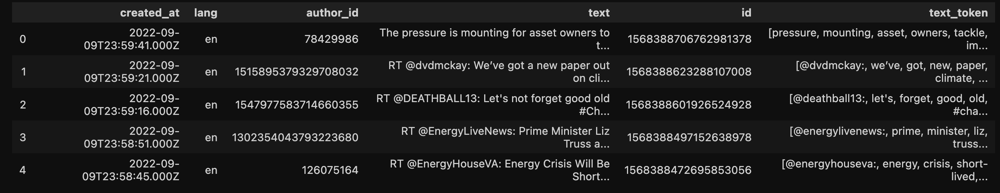
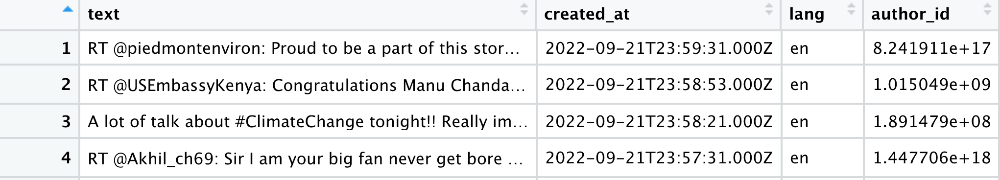

Cleaned DataFrame with created_at, lang, author_id, text, id and tokenized text:
Cleaned DataFrame with text, created_at, lang and author_id:
| Python Section | R Section |
|---|---|
| Raw Data | Raw Data |
| Cleaned Data | Cleaned Data |
| Python Data Cleaning Code | R Data Cleaning Code |